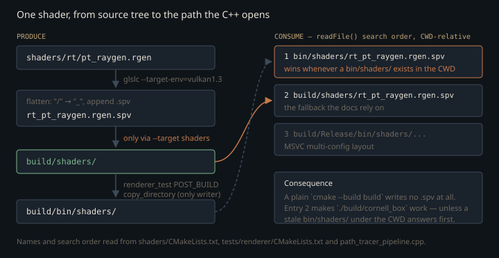

Monograph · Tree · ← Sitemap · Build system
systems
Build system
CMake options, targets, shaders target, examples.
Six archives and one edge nobody declared
`ohao/CMakeLists.txt` is six `add_subdirectory` lines and a comment; each leaf directory globs its own sources into a static library. The *declared* dependency graph is a clean DAG — `ohao_renderer` → `ohao_gpu_vulkan` → `ohao_scene` → `ohao_core`. The *reference* graph is not. `VulkanRenderer`, compiled into `ohao_gpu_vulkan`, owns a `std::unique_ptr<DeferredRenderer>` and calls through it every frame, while `DeferredRenderer` is compiled into `ohao_renderer`:
m_deferredRenderer->setScene(m_scene);ohao/gpu/vulkan/render_dispatch.cpp:36That back edge is never told to CMake. A static archive is scanned once, in the order it appears on the link line, and by the time `ld` reaches `libohao_gpu_vulkan.a` it has already discarded the `ohao_renderer` members it now needs. The examples and the standalone `renderer_test` therefore hand the linker the whole set as one re-scannable group instead of an ordered list:
-Wl,--start-group ohao_renderer ohao_gpu_vulkan ohao_scene ohao_physics ohao_audio ohao_core -Wl,--end-groupexamples/CMakeLists.txt:18The workaround is copied per call site rather than expressed once as a dependency, and the copies have drifted. `tests/shadow_system` (off by default) links `ohao_renderer` and `ohao_scene` in plain order with no group at all, and `tests/engine`, `tests/physics` and `tests/force_generators` open a group they never close.
target_link_libraries(shadow_system_tests PRIVATEtests/shadow_system/CMakeLists.txt:14The second link flag is doing quieter damage. `STB_IMAGE_IMPLEMENTATION` is expanded with external linkage in three translation units that land in three different archives — the bindless texture uploader in `ohao_gpu_vulkan`, the IBL prefilter in `ohao_renderer`, and the GLTF loader in `ohao_scene` — so `stbi_load` and friends are defined three times before the executable's own object file is even considered.
#define STB_IMAGE_IMPLEMENTATIONohao/gpu/vulkan/bindless_texture_manager.cpp:11#define STB_IMAGE_IMPLEMENTATIONohao/render/ibl/ibl_processor.cpp:10#define STB_IMAGE_IMPLEMENTATIONohao/scene/asset/model_gltf.cpp:2`stb_image_write` duplicates the same way and is the more immediate per-executable trigger: `model_gltf.cpp` expands it inside `ohao_scene`, and so does every `examples/*.cpp` main and `tests/renderer/renderer_test.cpp` — a second `stbi_write_png` in the executable's own object file. Exactly one engine TU avoids the collision, and it does so by hand: the FBX loader prefixes `STB_IMAGE_STATIC`, which gives its copy internal linkage.
#define STB_IMAGE_STATICohao/scene/asset/model_fbx.cpp:10Both are papered over at link time rather than fixed at the source: `--start-group` re-scans until fixpoint instead of declaring the edge, and `-Wl,--allow-multiple-definition` silences the duplicate-symbol error instead of isolating stb into one TU. The first costs a few link passes. The second costs the diagnostic itself, for the whole executable — any genuine ODR collision introduced anywhere in the engine now links silently, resolving to whichever definition the linker saw first.
target_link_options(${name} PRIVATE -Wl,--allow-multiple-definition)examples/CMakeLists.txt:20Optional SDKs, and the one that changes a class layout
Two heavy NVIDIA dependencies are `option()`-gated. NRD defaults ON; DLSS defaults to whether the vendored NGX static wrapper is present on disk, so a fresh clone without `external/DLSS/` configures cleanly with the feature off.
set(OHAO_DLSS_DEFAULT ON)CMakeLists.txt:60Both use the same guard shape: the `.cpp` stays in the source glob unconditionally and its *body* is wrapped in an `#ifdef`, so an OFF build compiles an empty translation unit rather than dropping a file from the target.
target_compile_definitions(ohao_renderer PRIVATE OHAO_NRD_ENABLED)ohao/render/CMakeLists.txt:48That shape is safe for NRD, whose surface is functions. It is a trap for DLSS, because `OHAO_DLSS_ENABLED` also gates *members* of a class that both archives see:
std::unique_ptr<DlssRR> m_dlssRR;ohao/render/rt/path_tracer.hpp:252`sizeof(PathTracer)` depends on the macro. `ohao_gpu_vulkan` pulls `path_tracer.hpp` in transitively through `renderer.hpp`, and the definition above is `PRIVATE`, so it does not propagate across the target boundary. The macro is therefore defined a second time, by hand, on the other library:
if(OHAO_DLSS AND TARGET ngx_dlss)ohao/gpu/vulkan/CMakeLists.txt:30Deleting that three-line block in `ohao/gpu/vulkan/CMakeLists.txt` does not fail the build. It produces two archives that disagree about the layout of a class they both construct and destroy — the failure surfaces as heap corruption at runtime, in a DLSS build, far from the cause.
What is actually optional
It is tempting to read the option list as "the heavy dependencies are all switchable". The top-level file declares nine `option()`s, and seven of them are test suites and the Python bindings; the only dependency switches are `OHAO_NRD` and `OHAO_DLSS`. OIDN is a hard `find_package(... REQUIRED)`, so a machine without OpenImageDenoise cannot configure the renderer at all:
find_package(OpenImageDenoise REQUIRED)ohao/render/CMakeLists.txt@223ff7f:4`glslc` is likewise `find_program` plus a fatal error, which means you cannot configure even a C++-only build without the Vulkan SDK's shader compiler on `PATH`:
message(FATAL_ERROR "glslc shader compiler not found!")shaders/CMakeLists.txt:5Jolt and Assimp are unconditional FetchContent; the `if(TARGET Jolt)` guards scattered through `ohao/physics` and the example function are a fallback for a fetch that produced no target, not a user-facing switch. "Bare build" in this tree means *without the two NVIDIA denoisers* — nothing more.
Surgery on a dependency's own compile options
NRD pulls in NRI, and NRI puts `-Werror` in `NRI_Shared`'s **PUBLIC** compile options, so the flag travels down the interface to everything NRI touches. Appending `-Wno-error` loses, because the interface `-Werror` is appended after it. The module records the concrete trigger it was written for — `NRI_VK`'s bundled `vk_mem_alloc.h` emitting `-Wimplicit-fallthrough` on the author's GCC 14; that is the reason on file, not something this tree reproduces, which builds with GCC 16. The fix does not try to predict the warning. It reaches into the already-created targets and strips the flag out of their properties:
list(REMOVE_ITEM _opts "-Werror")external/cmake/nrd.cmake:52That loop runs *after* `FetchContent_MakeAvailable(NRD)` and mutates targets that already exist, so it is indifferent to module order. What the include order in `external/CMakeLists.txt` buys is earlier and different: `nri.cmake` sets `NRD_NRI=ON` plus NRI's trimmed Vulkan-only cache surface before NRD's fetch reads them.
set(NRD_NRI ON CACHE BOOL "" FORCE)external/cmake/nri.cmake:34Get that order wrong and the failure is not a warning-as-error — there is no `NRI` target at all, and configuration stops here:
"NRD: OhaoNRDIntegration.cpp is present but NRI target is missing. "external/cmake/nrd.cmake:94include(${CMAKE_CURRENT_SOURCE_DIR}/cmake/nri.cmake)external/CMakeLists.txt:15Shaders compile into a flat namespace
Twelve stage extensions are globbed recursively out of `shaders/`, and each path is flattened by replacing directory separators with underscores before `.spv` is appended:
string(REPLACE "/" "_" SHADER_FLAT_NAME ${SHADER_REL})shaders/CMakeLists.txt:42So `shaders/rt/pt_raygen.rgen` becomes `rt_pt_raygen.rgen.spv`, and the C++ hardcodes exactly that mangled string as `PathTracer`'s default raygen. Moving a shader between directories renames its SPIR-V and every hardcoded path stops resolving — with no build error, because the flattening is a string operation the compiler never sees.
The C++ side explicitly filters the archived pass tree out of its glob:
list(FILTER RENDERER_SOURCES EXCLUDE REGEX "/_disabled/")ohao/render/CMakeLists.txt:17The shader glob has no such filter. In the configured build here, 35 of the 91 modules the rules produce come from `shaders/_disabled/`. A syntax error in a shader nobody ships fails the whole `shaders` target.
The include dependency that isn't tracked
Each compile command lists a set of `.glsl` headers as prerequisites, gathered by this pattern:
"${CMAKE_CURRENT_SOURCE_DIR}/includes/**/*.glsl"shaders/CMakeLists.txt:32CMake has no globstar. `**` is two ordinary wildcards, and the pattern still requires a literal `/` after them, so it only matches files at least one directory below `includes/`. Anything sitting at the top level of `shaders/includes/` matches nothing. Evaluated against this tree the shipped pattern yields 30 files; the plain recursive form yields 32. The two it misses are `noise.glsl` and `pbr_unpack.glsl` — and `pbr_unpack.glsl` is `#include`d by the three `pt_raygen*` shaders. (It is not a raygen-wide dependency: the tree's other two raygens, `rt_gi.rgen` and `rt_shadow.rgen`, pull in `includes/common/encoding.glsl` and nothing else.) Editing the material unpack marks not one `.spv` out of date.
The same `DEPENDS` list also names the output *directory*, created by its own custom command. In the generated Makefile that prerequisite is written as the relative path `shaders` — which is already the name GNU make has for the custom target — so `build.make` literally contains `shaders: shaders`, and each of the 91 module rules lists `shaders` as a prerequisite of a file inside `shaders`. Make prints 92 *circular dependency dropped* lines per invocation and ignores the edges. The ordering constraint the `DEPENDS` was written to express is therefore not enforced at all; it survives only because the directory already exists by the time `glslc` runs.
Nothing rebuilds as a consequence. Make dropped the edge, and even where such an edge is honoured it would be inert: overwriting an existing file in place does not advance its directory's mtime. Two consecutive `--target shaders` invocations here compile zero modules and change no timestamps — the target is a genuine fixpoint, which is exactly why the missing `pbr_unpack.glsl` edge above is dangerous rather than merely redundant.
The flat directory keeps its own history, too. `build/shaders/` holds 96 `.spv` files but only 91 have a producing rule; the other five — `pt_raygen.rgen.spv`, `pt_raygen_offline`, `pt_raygen_realtime`, `pt_closesthit.rchit.spv` and `rt_nrd_tonemap.comp.spv` — are orphans of an earlier naming scheme, one of them months older than the other four. Nothing deletes them, and a flat namespace gives no signal that a name is unclaimed.
Where the SPIR-V lands, and where the engine looks
The shader target is a plain `add_custom_target` with no `ALL`, so it is not a root of the default build in its own right:
add_custom_target(shadersshaders/CMakeLists.txt:54It is reached only because two test targets name it as a dependency, which is also what makes `cmake --build build` — the "build all" invocation — produce SPIR-V at all:
add_dependencies(renderer_test shaders)tests/renderer/CMakeLists.txt:44The `bin/shaders/` prefix the C++ paths name *first* is written by exactly one rule anywhere in the tree, and that rule now hangs off the `shaders` target itself rather than off a consumer — two consumers copying into one destination raced under `-j8`:
COMMENT "Copying shader SPVs to runtime output directory"shaders/CMakeLists.txt:85Configure with both `-DBUILD_RENDERER_TESTS=OFF` and `-DBUILD_DIFF_TESTS=OFF` and nothing asks for the target at all, so nothing populates it. What rescues the documented invocations is a three-entry search list inside the SPV loader. All three entries are relative paths resolved against the *working* directory, and the second is the CMake output tree:
"build/shaders/" + path.substr(path.find_last_of("/\\") + 1),ohao/render/rt/path_tracer_pipeline.cpp:19Entry 2 is why `./build/cornell_box` works from the repo root — but only when entry 1 misses, and entry 1 is not a fixed miss. It is the raw `bin/shaders/…` string baked into `PathTracerShaderSet`, tried verbatim before any fallback:
const char* raygenSpv{"bin/shaders/rt_pt_raygen.rgen.spv"};ohao/render/rt/path_tracer.hpp:55In this working tree a repo-root `bin/shaders/` does exist, holding six `rt_pt_*.spv` files from an older build. Run from the repo root, the path tracer loads those, not what `--target shaders` just produced. Today they happen to be byte-identical to the current output; nothing keeps them that way. No rule writes that directory — the `POST_BUILD` step above targets `build/bin/shaders/` — and `bin/` is untracked and not covered by `.gitignore`, so it is neither refreshed nor swept away. The interesting failure is not "no shader found"; it is a silently stale shader that outranks a fresh one.

The build type you cannot override
Line 11 of the top-level file sets the build type unconditionally:
set(CMAKE_BUILD_TYPE Debug)CMakeLists.txt:12An unqualified `set` creates a *normal* variable, which shadows the cache entry for this directory and everything reached through `add_subdirectory`. Passing `-DCMAKE_BUILD_TYPE=Release` populates the cache and is then ignored: on a minimal reproduction the subdirectory reports `Debug`, the compile line carries `-O0`, and `NDEBUG` is never defined. In the configured tree here all 98 translation units under `ohao/` compile with `-g -g -O0` — the duplicated `-g` because the next line appends to CMake's own `CMAKE_CXX_FLAGS_DEBUG` rather than replacing it.
Nothing is broken by this — it is a deliberate default for a renderer under active development — but it means any wall-clock figure taken from a stock OHAO build is an `-O0` figure, and a release build of this engine does not currently exist as a supported configuration.
Contracts
- `external/cmake/nri.cmake` must be included before `nrd.cmake`, or NRI's cache options are set after NRD's FetchContent has already consumed them.
- `OHAO_DLSS_ENABLED` must be defined on **both** `ohao_renderer` and `ohao_gpu_vulkan`. It is `PRIVATE` on each, so removing either definition silently desynchronises `sizeof(PathTracer)` between the two archives.
- The `shaders` target is not in `all`. `cmake --build build --target shaders` must be run explicitly, and `build/bin/shaders/` exists only as a side effect of building `renderer_test`.
- Every source glob except the NRD-integration one lacks `CONFIGURE_DEPENDS`; adding a `.cpp` or a `.rgen` requires re-running `cmake` before it is compiled at all.
- `shaders/includes/*.glsl` at the top level (`pbr_unpack.glsl`, `noise.glsl`) is outside the shader dependency glob. After editing either, delete `build/shaders/` or the three `pt_raygen*` modules keep their stale SPIR-V — `--target shaders` is otherwise a no-op.
- The path tracer's SPV loader tries `bin/shaders/<name>` relative to the CWD *before* `build/shaders/`. A leftover `bin/shaders/` in the working directory silently shadows every freshly compiled raygen, miss and hit shader.
Source files
ohao/gpu/vulkan/render_dispatch.cppexamples/CMakeLists.txttests/shadow_system/CMakeLists.txtohao/gpu/vulkan/bindless_texture_manager.cppohao/render/ibl/ibl_processor.cppohao/scene/asset/model_gltf.cppohao/scene/asset/model_fbx.cppCMakeLists.txtohao/render/CMakeLists.txtohao/render/rt/path_tracer.hppohao/gpu/vulkan/CMakeLists.txtohao/render/CMakeLists.txt@223ff7fpath noteshaders/CMakeLists.txtexternal/cmake/nrd.cmakeexternal/cmake/nri.cmakeexternal/CMakeLists.txttests/renderer/CMakeLists.txtohao/render/rt/path_tracer_pipeline.cppohao/CMakeLists.txtParent hub for the full pipeline narrative; this page is the file-level design unit. Sitemap · hover glossary terms anywhere.